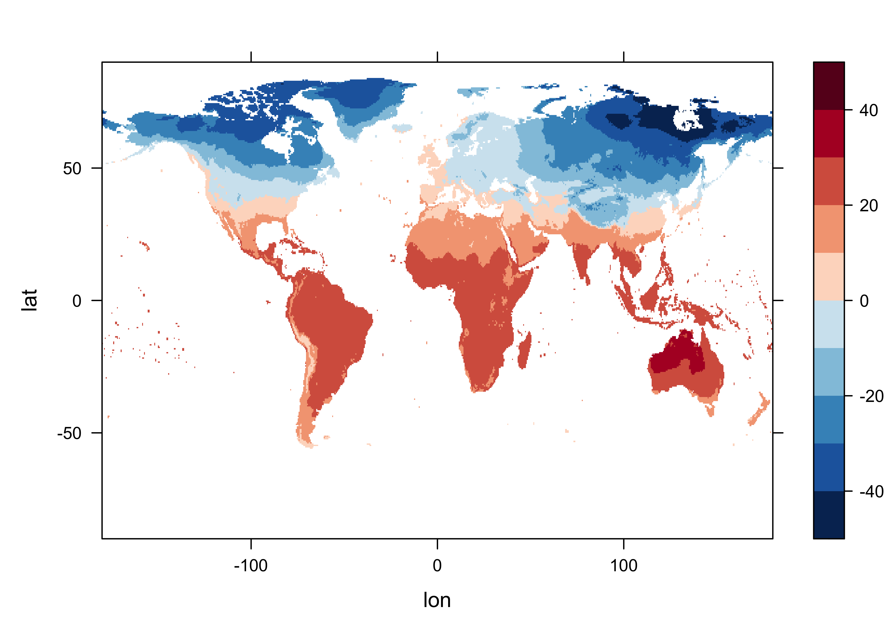
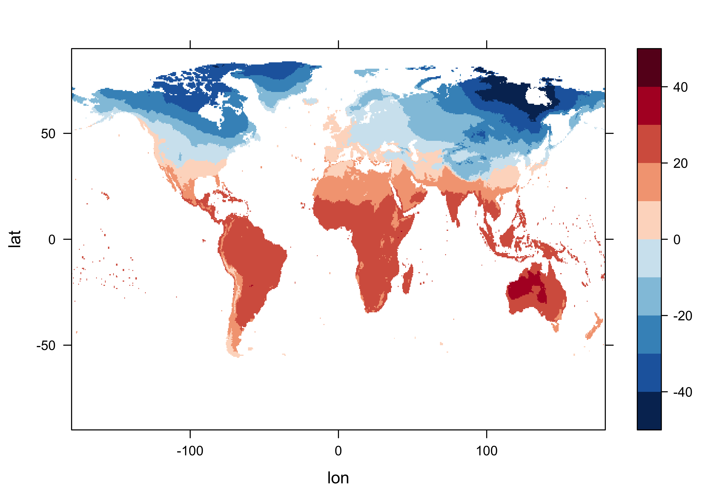
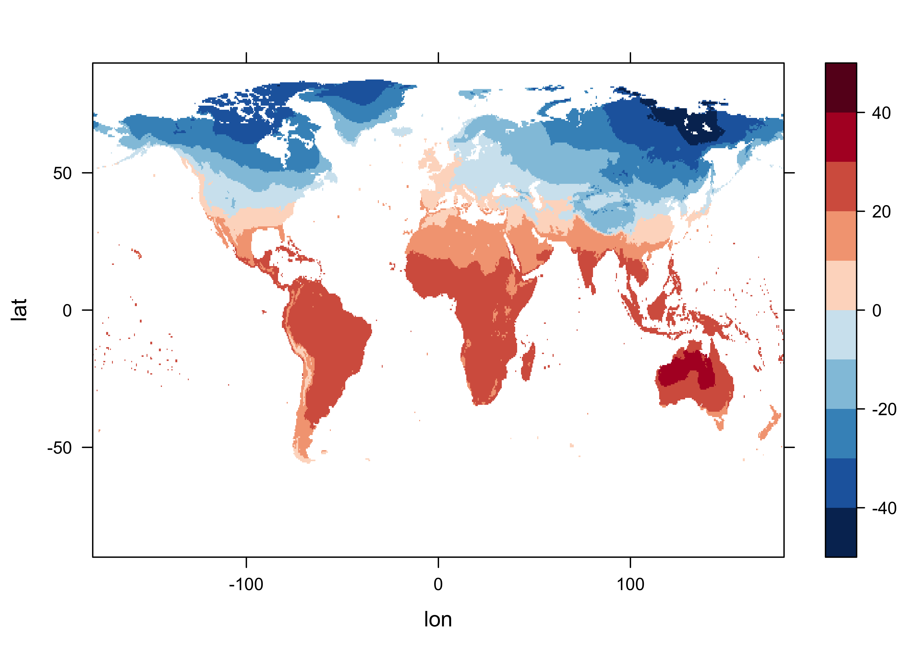
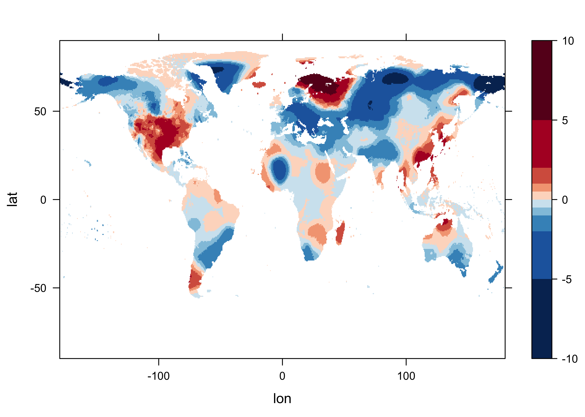

Long-term means and anomalies
1 Calculate long-term means and anomalies
A common task in analyzing Earth-system science data is the calculation of “anomalies” or differences between individual months or years and some long-term average. This produces two new data sets: 1) the long-term means (“ltm’s”) and 2) the anomalies (“anm’s”). The example here gets the long-term means and anomlies for the CRU TS 4.02 near-surface air temperature data set cru_ts4.02.1901.2017.tmp.dat.nc. The data include monthly values for the interval 1901 - 2017, and the long-term means will be calculated for one of the commonly used base periods, 1961 - 1990.
2 Read the data
Load the necessary packages, and set paths and filenames:
# load the ncdf4 package
library(ncdf4)
library(ncdf.tools)
library(lattice)
library(RColorBrewer)
#library(chron)
# set path and filename
ncpath <- "/Users/bartlein/Projects/ESSD/data/nc_files/"
ncname <- "cru_ts4.02.1901.2017.tmp.dat.nc"
ncfname <- paste(ncpath, ncname, sep="")
dname <- "tmp" # note: tmp means temperature (not temporary)2.1 Read dimensions and attributes of the data set
Open the netCDF file (and list its contents), and read longitudes, latitudes and times:
## File /Users/bartlein/Projects/ESSD/data/nc_files/cru_ts4.02.1901.2017.tmp.dat.nc (NC_FORMAT_CLASSIC):
##
## 2 variables (excluding dimension variables):
## float tmp[lon,lat,time]
## long_name: near-surface temperature
## units: degrees Celsius
## correlation_decay_distance: 1200
## _FillValue: 9.96920996838687e+36
## missing_value: 9.96920996838687e+36
## int stn[lon,lat,time]
## description: number of stations contributing to each datum
##
## 3 dimensions:
## lon Size:720
## long_name: longitude
## units: degrees_east
## lat Size:360
## long_name: latitude
## units: degrees_north
## time Size:1404 *** is unlimited ***
## long_name: time
## units: days since 1900-1-1
## calendar: gregorian
##
## 8 global attributes:
## Conventions: CF-1.4
## title: CRU TS4.02 Mean Temperature
## institution: Data held at British Atmospheric Data Centre, RAL, UK.
## source: Run ID = 1811131722. Data generated from:tmp.1804231108.dtb
## history: Tue 13 Nov 2018 18:22:57 GMT : User ianharris : Program makegridsauto.for called by update.for
## references: Information on the data is available at http://badc.nerc.ac.uk/data/cru/
## comment: Access to these data is available to any registered CEDA user.
## contact: support@ceda.ac.uk## [1] -179.75 -179.25 -178.75 -178.25 -177.75 -177.25## [1] -89.75 -89.25 -88.75 -88.25 -87.75 -87.25## [1] 720 360# get time
time <- ncvar_get(ncin,"time")
tunits <- ncatt_get(ncin,"time","units")
nt <- dim(time)
nm <- 12
ny <- nt/nm
# convert time -- split the time units string into fields
print(tunits)## $hasatt
## [1] TRUE
##
## $value
## [1] "days since 1900-1-1"tustr <- strsplit(tunits$value, " ")
ptime <- convertDateNcdf2R(time, unlist(tustr)[1], origin = as.POSIXct(unlist(tustr)[3],
tz = "UTC"), time.format = "%Y-%m-%d")
head(time); tail(time)## [1] 380 410 439 470 500 531## [1] 42930 42961 42992 43022 43053 43083## [1] "1901-01-16 UTC" "1901-02-15 UTC" "1901-03-16 UTC" "1901-04-16 UTC" "1901-05-16 UTC" "1901-06-16 UTC"## [1] "2017-07-16 UTC" "2017-08-16 UTC" "2017-09-16 UTC" "2017-10-16 UTC" "2017-11-16 UTC" "2017-12-16 UTC"Get the years from ptime and also generate a sequence of index values for months.
# get years from ptime & generate months
year <- as.numeric(unlist(strsplit(as.character(ptime),"-"))[seq(1, nt*3, by=3)])
head(year); tail(year)## [1] 1901 1901 1901 1901 1901 1901## [1] 2017 2017 2017 2017 2017 2017## [1] 1 2 3 4 5 6## [1] 7 8 9 10 11 12## [1] "1901-01-16 UTC" "1901-02-15 UTC" "1901-03-16 UTC" "1901-04-16 UTC" "1901-05-16 UTC" "1901-06-16 UTC"## [1] "2017-07-16 UTC" "2017-08-16 UTC" "2017-09-16 UTC" "2017-10-16 UTC" "2017-11-16 UTC" "2017-12-16 UTC"2.2 Read the array
Read the data, and get variable and global attributes:
# get temperature
tmp_array <- ncvar_get(ncin,dname)
dlname <- ncatt_get(ncin,dname,"long_name")
dunits <- ncatt_get(ncin,dname,"units")
fillvalue <- ncatt_get(ncin,dname,"_FillValue")
dim(tmp_array)## [1] 720 360 1404# get global attributes
title <- ncatt_get(ncin,0,"title")
institution <- ncatt_get(ncin,0,"institution")
datasource <- ncatt_get(ncin,0,"source")
references <- ncatt_get(ncin,0,"references")
history <- ncatt_get(ncin,0,"history")
Conventions <- ncatt_get(ncin,0,"Conventions")
head(ptime); tail(ptime)## [1] "1901-01-16 UTC" "1901-02-15 UTC" "1901-03-16 UTC" "1901-04-16 UTC" "1901-05-16 UTC" "1901-06-16 UTC"## [1] "2017-07-16 UTC" "2017-08-16 UTC" "2017-09-16 UTC" "2017-10-16 UTC" "2017-11-16 UTC" "2017-12-16 UTC"Close the netCDF data set.
3 Long-term means
3.1 Set up for long-term mean calculation
Replace netCDF fill values with R NA’s
# replace netCDF fill values with NA's
tmp_array[tmp_array==fillvalue$value] <- NA
length(na.omit(as.vector(tmp_array[,,1])))## [1] 67420Get a levelplot of a slice of the array to check.
# levelplot of the slice
n <- 1
grid <- expand.grid(lon=lon, lat=lat)
cutpts <- c(-50,-40,-30,-20,-10,0,10,20,30,40,50)
levelplot(tmp_array[,, n] ~ lon * lat, data=grid, at=cutpts, cuts=11, pretty=T,
col.regions=(rev(brewer.pal(10,"RdBu"))))
Get the indices for the beginning and end of the base period, and save them as a string.
# get beginning obs of base period
begyr <- 1961; endyr <- 1990; nyrs <- endyr - begyr + 1
begobs <- ((begyr - year[1]) * nm) + 1
endobs <- ((endyr - year[1] + 1) * nm)
base_period <- paste(as.character(begyr)," - ", as.character(endyr), sep="")
print(c(begyr, endyr, begobs, endobs, base_period))## [1] "1961" "1990" "721" "1080" "1961 - 1990"Get a levelplot of the first observation in the base period.
# levelplot of begobs
tmp_slice <- tmp_array[,, begobs]
grid <- expand.grid(lon=lon, lat=lat)
cutpts <- c(-50,-40,-30,-20,-10,0,10,20,30,40,50)
levelplot(tmp_slice ~ lon * lat, data=grid, at=cutpts, cuts=11, pretty=T,
col.regions=(rev(brewer.pal(10,"RdBu"))))
Create a new array with just the base period data in it.
## [1] 720 360 360Get a levelplot of that, which should match the previous plot
# levelplot of tmp_array_base
tmp_slice <- tmp_array_base[,, 1]
grid <- expand.grid(lon=lon, lat=lat)
cutpts <- c(-50,-40,-30,-20,-10,0,10,20,30,40,50)
levelplot(tmp_slice ~ lon * lat, data=grid, at=cutpts, cuts=11, pretty=T,
col.regions=(rev(brewer.pal(10,"RdBu"))))
3.2 Get long-term means
The long-term means are calculated by looping over the grid cells and months.
## [1] 720 360 12for (j in 1:nlon) {
for (k in 1:nlat) {
if (!is.na(tmp_array_base[j, k, 1])) {
for (m in 1:nm)
tmp_ltm[j, k, m] <- mean(tmp_array_base[j, k, seq(m, (m + nm*nyrs - 1), by=nm)])
}
}
}Levelplot of the long-term means:
# levelplot of tmp_ltm
tmp_slice <- tmp_ltm[,, 1]
grid <- expand.grid(lon=lon, lat=lat)
cutpts <- c(-50,-40,-30,-20,-10,0,10,20,30,40,50)
levelplot(tmp_slice ~ lon * lat, data=grid, at=cutpts, cuts=11, pretty=T,
col.regions=(rev(brewer.pal(10,"RdBu"))))
4 Get anomalies
The anomalies are gotten for each grid point by simply expanding the twelve ltm values (one for each month of the year) over the ny year of the record, and differencing. In this way, the anomaly for each January in the record is the difference between the “absolute” (but not “absolute value” (abs())) or observed value, and the January long-term mean.
Get a levelplot of an anomoly. Note the different cutpoints.
# levelplot of tmp_ltm
tmp_slice <- tmp_anm[,, 1]
grid <- expand.grid(lon=lon, lat=lat)
cutpts <- c(-10,-5,-2,-1,-0.5,0,0.5,1,2,5,10)
levelplot(tmp_slice ~ lon * lat, data=grid, at=cutpts, cuts=11, pretty=T,
col.regions=(rev(brewer.pal(10,"RdBu"))))
5 Write netCDF files of the ltm’s and anomalies
Write out netCDF files of the long-term means and anomalies in the usual way.
# netCDF file of ltm's
# path and file name, set dname
ncpath <- "/Users/bartlein/Projects/ESSD/data/nc_files/"
ncname <- "cru_ts4.02.1961.1990.tmp.ltm.nc"
ncfname <- paste(ncpath, ncname, sep="")
dname <- "tmp_ltm" # note: tmp means temperature (not temporary)
# get time values for output
time_out <- time[(begobs + (nyrs/2)*nm):(begobs + (nyrs/2)*nm + nm - 1)]
# recode NA's to fill_values
tmp_ltm[is.na(tmp_ltm)] <- fillvalue$value
# create and write the netCDF file -- ncdf4 version
# define dimensions
londim <- ncdim_def("lon","degrees_east",as.double(lon))
latdim <- ncdim_def("lat","degrees_north",as.double(lat))
timedim <- ncdim_def("time",tunits$value,as.double(time_out))
# define variables
dlname <- "near-surface air temperature long-term mean"
tmp_def <- ncvar_def("tmp_ltm","degrees Celsius",list(londim,latdim,timedim),fillvalue$value,dlname,prec="single")
# create netCDF file and put arrays
ncout <- nc_create(ncfname,tmp_def,force_v4=TRUE)
# put variables
ncvar_put(ncout,tmp_def,tmp_ltm)
# put additional attributes into dimension and data variables
ncatt_put(ncout,"lon","axis","X") #,verbose=FALSE) #,definemode=FALSE)
ncatt_put(ncout,"lat","axis","Y")
ncatt_put(ncout,"time","axis","T")
ncatt_put(ncout,"tmp_ltm","base_period", base_period)
# add global attributes
ncatt_put(ncout,0,"title",title$value)
ncatt_put(ncout,0,"institution",institution$value)
ncatt_put(ncout,0,"source",datasource$value)
ncatt_put(ncout,0,"references",references$value)
history <- paste("P.J. Bartlein", date(), sep=", ")
ncatt_put(ncout,0,"history",history)
ncatt_put(ncout,0,"Conventions",Conventions$value)
# Get a summary of the created file:
ncout
# close the file, writing data to disk
nc_close(ncout)# netCDF file of anomalies
# path and file name, set dname
ncpath <- "/Users/bartlein/Projects/ESSD/data/nc_files/"
ncname <- "cru_ts4.02.1901.2017.tmp.anm.nc"
ncfname <- paste(ncpath, ncname, sep="")
dname <- "tmp_anm" # note: tmp means temperature (not temporary)
# recode NA's to fill_values
tmp_anm[is.na(tmp_anm)] <- fillvalue$value
# create and write the netCDF file -- ncdf4 version
# define dimensions
londim <- ncdim_def("lon","degrees_east",as.double(lon))
latdim <- ncdim_def("lat","degrees_north",as.double(lat))
timedim <- ncdim_def("time",tunits$value,as.double(time))
# define variables
dlname <- "near-surface air temperature anomalies"
tmp_def <- ncvar_def("tmp_anm","degrees Celsius",list(londim,latdim,timedim),fillvalue$value,dlname,prec="single")
# create netCDF file and put arrays
ncout <- nc_create(ncfname,tmp_def,force_v4=TRUE)
# put variables
ncvar_put(ncout,tmp_def,tmp_anm)
# put additional attributes into dimension and data variables
ncatt_put(ncout,"lon","axis","X") #,verbose=FALSE) #,definemode=FALSE)
ncatt_put(ncout,"lat","axis","Y")
ncatt_put(ncout,"time","axis","T")
ncatt_put(ncout,"tmp_anm","base_period", base_period)
# add global attributes
ncatt_put(ncout,0,"title",title$value)
ncatt_put(ncout,0,"institution",institution$value)
ncatt_put(ncout,0,"source",datasource$value)
ncatt_put(ncout,0,"references",references$value)
history <- paste("P.J. Bartlein", date(), sep=", ")
ncatt_put(ncout,0,"history",history)
ncatt_put(ncout,0,"Conventions",Conventions$value)
# Get a summary of the created file:
ncout
# close the file, writing data to disk
nc_close(ncout)